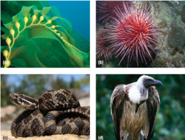
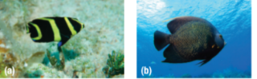
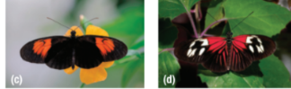
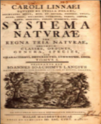
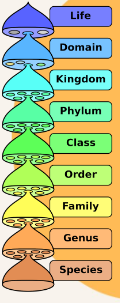
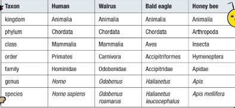
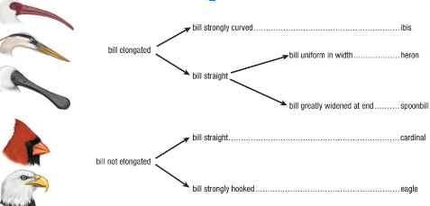
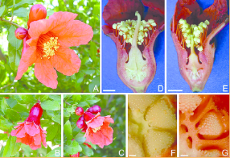

The Nature of Classification
➤Classification systems are also a source of information and a tool for communication—how an item is classified tells you something about the item.
➤In biology, organisms can be classified in many ways. The systematic grouping of organisms into categories on the basis of defined criteria is called biological classification.
Familiar and ecologically important categories include producers, herbivores, carnivores, and scavengers.
Scientists often classify organisms according to their role in ecosystems:
(a) kelp is a producer,
(b) a sea urchin is a herbivore,
(c) a massasauga rattlesnake is a predator, and
(d) a vulture is a scavenger.

Callout
Producers- organisms capable of creating simple carbohydrates such as glucose, from gaseous carbon dioxide.
Herbivores- animals whose primary food source is plant-based.
Predators- an animal that naturally preys on others.
Scavengers- an animal or other organism that feeds on dead organic matter.
Try this…
Sorting
Callout
Taxonomy—developing a Classification System
Taxonomy -the science of classifying all organisms; taxonomists classify both living and fossil species.
➤The best criteria to use for classifying organisms depend on the purpose of the classification system.
➤With millions of species living on Earth, and countless extinct species, taxonomy is a challenging science. Taxonomy is also referred to as the “Science of Systematics.”
The Need for Identification
Before you can classify objects or species, you must be able to identify them. One-way biologists identify organisms is by observed characteristics—morphology, behavior, and even geographic location.
To make matters even more challenging, individuals of the same species are variable—males differ from females, and individuals change in appearance as they grow.


Callout
The juvenile (a) and adult grey (b) angel fish are the same species but do not appear similar. These passion-vine butterflies, (c) and (d), belong to the same species, but inhabit different geographic ranges. They have evolved different wing coloration.
Today, biologists have powerful new tools to use in taxonomy. Every species and most individuals of sexually reproducing species have a unique and characteristic set of genetic instructions in their DNA.
Timeline
-
Early Biological Classification Systems
Botanist- a scientist specializing in
the study of plants; also called a plant biologist.
Many plants look quite similar, and when not in flower can be quite difficult to tell apart. Many plants are also toxic.
➤Today, scientists who specialize in the study of plants are called botanists. Botanists study over a quarter of a million species of living organisms.
Carl Linnaeus
Swedish naturalist Carl Linnaeus (1707–1778) is considered the “father” of taxonomy. He introduced a consistent way of grouping species according to their morphological (or physical) similarities. He also established a naming system that is still used today.
➤Linnaeus considered species to be distinct types of living things that could be grouped into categories called genera (singular: genus) according to shared characteristics.
➤Before Linnaeus, naming practices varied widely. It was common for species to be given one or more long descriptive names.
For example, the briar rose was named both Rosa sylvestris inodora seu canina (the odourless woodland dog rose) and Rosa sylvestris alba cum rubore, folio glabro (the pinkish white woodland rose with smooth leaves).➤This binomial nomenclature system is now the formal system used to name species.
-
The Great Chain of Being
Many early classification systems were based on the philosophical assumption that each type of organism held a fixed position, or rank, on a scale from lowest to highest. Humans were positioned at the top, mammals and birds were above frogs and fish, and all animals were above plants. This hierarchy, referred to as the Great Chain of Being, or the scala naturae, resulted in very complex plants being positioned below even the simplest animals—an orchid below a flatworm or hydra, for example.
In the first edition of his
book Systema Naturae (1735), Linnaeus
grouped species and genera into orders,
classes, and kingdoms.
Callout
Traditional Taxonomic Levels
Linnaeus further grouped species into taxonomic ranks, or levels, based on shared characteristics. Each level is called a taxon (plural: taxa).

Linnaeus’s original system consisted of five taxa and was later modified to include seven major levels: similar species were grouped into genera, similar genera into families, similar families into orders, orders into classes, classes into phyla, and phyla into the highest taxonomic level—kingdom. Linnaeus placed all organisms into just two kingdoms: plants and animals. At that time all algae and fungi were considered plants.

Traditional Taxonomic Ranks of Classification

Callout
In the Linnaean system, each taxonomic rank consists of species that have similar features. For example, all species in the phylum Chordata have a backbone or a primitive backbone. Similarly, all members of class Mammalia are warm-blooded and feed milk to their young.
Dichotomous Keys
Biologists use dichotomous keys to help them identify organisms. A dichotomous key is a structure in which a large set of items is broken down into smaller subsets, ultimately leading to the smallest available classification unit.
A Dichotomous Key for Classifying Birds

Callout
The dichotomous key above provides an easy method of identifying these five bird species.
Dichotomous Keys
Creating and using dichotomous keys to classify other groups of organisms can be even more challenging. For example, many plants can be distinguished from each other only by a dissection and close examination of their flower parts.


Once the features to be used in a dichotomous key are chosen, another challenge arises—these features may be difficult to observe. Internal anatomical and physiological similarities, for example, are considered more significant than outward appearances, but they are not always easily observed. For instance, the horseshoe crab has crab-like legs and pincers, but its blood chemistry and internal structures indicate that it is more closely related to spiders than to true crabs Despite its name, the horseshoe crab is more closely related to spiders than to true crabs.